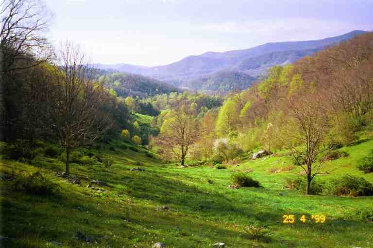
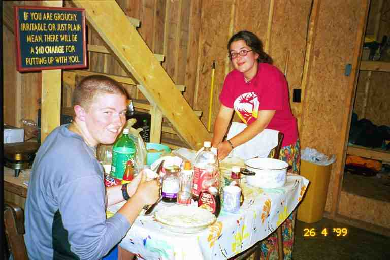
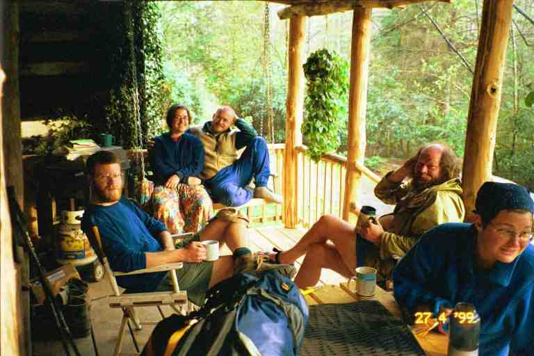
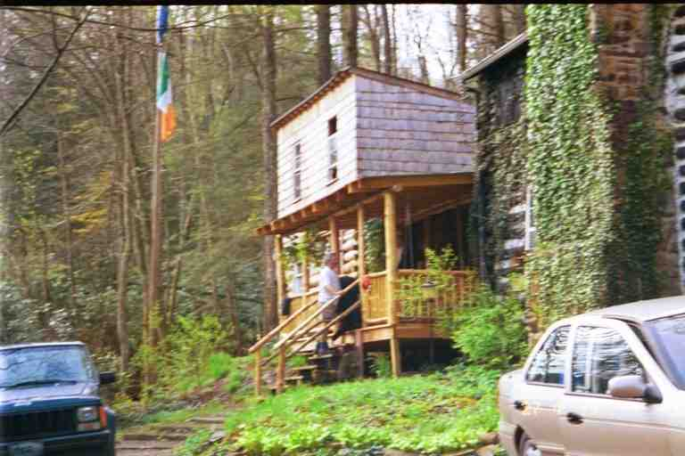

Before we left Apple House shelter on the morning of April 25, JUNKER arrived to say hello. He had just dropped off his crew of slackpackers and walked in from the road. Many hikers were hanging around to go to the AYCE Sunday brunch up the road. Some would stay until the next day because they had a mail drop at one of the two local towns and the Post Offices were closed today.
FOODBAG was hiking with us again today. Half a mile from the shelter we came to US 19E. The Thru-Hiker's Companion says that there have been some problems in the past between hikers and locals on the section between this road and Moreland Gap, our destination for tonight. The trail crossed the highway and took a dirt road next to an old mobile home. It then immediately went back into the woods and proceeded to climb an incline. To our right was a ravine through which a stream flowed and on the other side of the ravine we caught glimpses of the dirt road. Both sides of the ravine were littered with garbage and appliances that had been dumped down from the road. It would have been such a beautiful restful place otherwise. What a shame.
But our spirits were soon lifted. The trail lead to a beautiful green valley. The valley sloped up gently on both sides and the trail followed the valley as it climbed slowly into the hills. It was a peaceful place with trees budding and birds singing. The beauty was marred only slightly by tire tracks from an ATV that had wound its way through the grass. The trail aimed for a big tree sitting in the middle of the valley, part way up the hill. After passing the tree, I stopped and took a picture of it down in the valley below us. I find the attached picture to be quite beautiful but does not do justice to what we saw and experienced in this spot that the maps call Bishop Hollow. It had a strong emotional effect on us.

At the top of the valley, the trail turned right, went through a small wooded area and then wandered along at the edge of the woods just above mountain meadows. The scenery and the warm sun made for a very leisurely early morning hike. We then contoured a number of fields and crossed a road before coming to the dreaded road walk that everyone had been talking about.. The trail followed along the road for some time and turned a curve where there were a number of houses. The first one was in a state of disrepair and there were a number of dogs tied up in the yard. They all started barking and a female Rottweiler who was not tied up came running at us, barking and snarling. We all stuck our hiking poles out towards her. As we continued, she followed us and finally returned home. A few houses further a big collie came running out of a yard towards us. Again we used our poles as protection but this dog was a little more persistent. We escaped unscathed.
Many hikers have had problems here. If the dog owners are outside, they make no attempt to restrain the dogs. We were lucky that the dogs at the first house were tied because there have been occasions where a number of dogs have confronted hikers. Apparently the owner just sits on the porch and smiles through it all. I read a recent note on-line that the trail now avoids this road walk.
We went into a low lying wooded area and kept on our guard as we went. We met a group of day hikers, one of whom was the owner of the outfitting store in Johnson City where FOODBAG had obtained the Superfeet insoles which he had given up on. We then crossed a stream and had to climb over a large log blocking our way. Here we took a break and met COURT DOG and his father PA DOG who had come out to hike with his son for a few weeks. This was PA DOG's first day on the trail. He seemed to be in his mid sixties, was a little overweight and, when we first met him, he was exhausted. We would see PA DOG off and on for the next few weeks and COURT DOG even longer. COURT DOG was a strong fast walker and it must have been difficult to slow his pace to accommodate his father. However, PA DOG did get stronger over the next few weeks.
We crossed a road and then started climbing. The contour map showed a few little ups and downs but the actual terrain did not seem to agree. We found the walking quite strenuous with lots of steep climbs. Conversation with most hikers we met over the next few days always seemed to include a discussion of the terrible contour map on the way to Moreland Gap.
We came to an area where in the past some people had painted over the trail blazes and painted some new ones to lead hikers astray. We had no such problem. We leap frogged PA DOG and COURT DOG a few times during the early afternoon and they indicated they would not be going to Moreland Gap shelter but would be stopping to camp early.
We crossed a few streams during the afternoon and each time I stopped and removed my boots and soaked my feet in the cold water. FOODBAG did likewise. My feet had been bothering me for a long time. Soaking the feet seemed to shrink the feet and make them feel more comfortable. (I will discuss feet problems at the end of this segment.)
We remember this day as the day of the 19 Moreland Gaps. There was a lot of sameness to the terrain. The trail would come out into the open and hug the side of hills in the sunlight. It would then dip down into a wooded area out of the sun, to then climb back out onto the sunny slopes again. By late afternoon we were getting tired and were anxious to arrive at the shelter. As we trudged along with MA in front, FOODBAG on her heels and me close behind, I tried to stay amused by singing songs based on themes, for example all songs with a certain word in title, such as 'cry'. FOODBAG kept me company and sang better than me.
We knew we had a 14 mile day and made calculations of our time of arrival based on our estimated speed. We usually did pretty good at estimating our location in this way but this day was an exception. Each time the trail dipped into a wooded area or each time we contoured a hill and came to a new valley or ravine, we thought we had arrived at Moreland Gap. I counted Moreland Gap 19 times. We finally arrived near 6 o'clock.
There was nobody else at the shelter when we arrived. We settled in and I checked the surrounding area and found a pile of garbage part way down the hill behind the shelter and ATV tire tracks leading down the hill. This is the only shelter on the entire trail where we found garbage.
SONGBIRD arrived. She said that she also became discouraged getting here, and had reluctantly stopped to set up her tent when she heard my loud voice coming from the shelter. She was obviously glad to be with us. She also complained about the contour maps. I went with her down the steep slope in front of the shelter to fetch water. We then all sat on the edge of the shelter and cooked supper before it got too dark. The night was uneventful and we slept well.
We planned the next day to be a short 6 mile hike to Kincora hostel on Dennis Cove road which would be the 400 mile mark of our trip. SONGBIRD left ahead of us. We started the day with a climb up White Rock mountain and then a dip and then a steep tiring climb up a loose gravelled bulldozed road to a fire tower and then descended 1400 feet to Dennis Cove road where we found two signs for hostels. A large one pointed 0.5 miles east towards Laurel Creek Lodge, Campground and Hostel. It offered a hot tub, movies, cabins, etc. for $10. A smaller sign pointed 0.2 miles to the west and simply said Kincora and a $4 rate. FOODBAG wanted to go to Laurel Creek but I had my mind set on Kincora, based on the things I had heard.
It started to rain and we headed up the paved road to the east, surrounded by fenced in pasture land. We soon came to a large sign urging us to turn around to go to the other hostel and all its amenities. Kind of funny actually, because there could not be much profit in running a hostel. We later found out from COURT DOG that he and his dad stayed at the other hostel and had a wonderful time. We heard similar stories from others. There was a charge of $10 to stay in a cabin that they could be required to share with 3 other hikers. The owners cooked up a large inexpensive meal which included freshly caught trout, and even brought some trout to hikers who did not buy supper. COURT DOG said it was a nice place and the hot tub and movies made it even better.
However, we were going to Kincora. We soon came to the mailbox announcing our destination and walked up the driveway to a two story log home. Just past the house was a large shingled building attached to the back of the house by a large covered porch. We climbed the porch and met a number of hikers. A clean shaven man with a brush cut greeted us and gave us a tour.
From the porch there was a passageway to the home on the right and on the left was the entrance to the hostel. At the back of the porch was a wall with doors leading to a wash room, a couple of showers and a laundry room. Towels were provided free as was the laundry soap. All they asked is that hikers throw some of the towels in with their laundry and then fold them and return them to the clean pile. Attached to the wall was a list of hikers for whom mail drops had arrived. (Many hostels, motels, etc., accepted and held maildrops. It was more convenient than the post office because they were open weekends and were often closer to the trail)
Our tour guide then took us inside the shelter where we found a fully equipped kitchen, a living room and a small private bedroom which HOLLY and DOOLEY had appropriated. At the back was a little telephone room and a door to the backyard for tenting when the hostel was full and for use by hikers with dogs. Up the stairs was the bunk room which slept about 15 on bunks and on a few beds stuck in corners where the roof was low. MA and I claimed two beds that were next to each other in a corner.
Our tour guide was doing a great job selling the place, encouraging us to stay. He explained that the cost was a donation of $4, and that there was a great relaxed atmosphere for hikers. I asked who he was, and to my surprise and embarrassment he said he was BALTIMORE JACK. I apologized profusely for not recognizing him.
We were soaked and he was worried about us so he brought us downstairs where he heated up the leftovers from a large breakfast that he had made for everyone that morning. We had eggs and ham and bacon and pan fries and toast, etc. as well as coffee. We went upstairs to change and then were joined by Bob Peoples who, with his wife Pat, owns Kincora. What a nice person. He made us feel very welcome. They are originally from New England and he explained that it was always his dream to have a hostel. When he retired, they travelled around trying to find a place that would suit that purpose. They bought this house and added the porch and hostel. There is no TV as he wants to encourage interaction between the hikers. There is also no smoking, drinking or profanity allowed on the premises.
We had a shower and met lots of new people including FENRIR (a character in Norse mythology I think) who lives in Minnesota but whose mother owns a boulangerie in France where he has spent his summers working. We also met ALGAE and PARANOID two 17 year old girls from Kansas and JILEBI and her husband RHUBARB. JILEBI is the name of a kind of candy from Sri Lanka. She is originally from Sri Lanka and was one of only two black thru hikers we met. She is also one of the nicest people we met. She always seemed to be laughing and smiling. She always had wonderful entries in the registers describing the vegetation and the trail. She always included a cute little cartoon that she drew with colored crayons she carried with her. Many of the cartoons poked fun at her clumsiness or showed her dancing with joy. Her journal is at www.trailplace.com under the name June James. It is very well written and descriptive.
Some of the other people who were here, or who arrived later, were SKIRTS and TWO TONE ALBATROSS, SONGBIRD, RAINDANCER, ELF, ULYSSES, CABOOSE, CHRISTOPHER ROBBINS and TIGGER, CHICKEN and SEMPER FI DREW. That afternoon, a few people played scrabble on the floor upstairs. In the attached picture, you see me showing off Pringle duck lips that JILEBI showed me how to do. Next to me is FOODBAG and across from me is SEMPER FI DREW. Later in the afternoon, Bob drove a bunch of us down the winding mountain road to town to get mail and groceries. He makes the trip two or three times a day at no charge in a van which he converted for that purpose. MA stayed at the hostel to do laundry.
He gave us an hour to shop at the supermarket. I found myself with extra items in my cart. It seems that when I turned my back, DOOLEY was adding items. BALTIMORE JACK had collected $5 from everyone and was buying the ingredients for a BBQ that he was going to cook, and also ingredients for apple pies that SKIRTS had offered to bake. On the way back through town, BALTIMORE JACK noticed BEORNE sitting on the sidewalk talking on a pay phone. We stopped and picked him up. He had yellow blazed from Apple House shelter to here, Hampton TN. The road wound its way from side to side as it went back up the hill making us all dizzy and nauseous because the seats faced sideways and because there was an exhaust leak which had become more noticeable as the old van struggled up the mountain.
ALGAE volunteered to help SKIRTS make the apple pies and BALTIMORE JACK started preparations for the BBQ. We did not eat until 9:30 but it was a feast which started with a gigantic salad, was followed with corn on the cob and then BBQ chicken and pork, with baked potatoes, all cooked on the BBQ on the porch. I see by the journals on the internet, that BALTIMORE JACK stayed here a few days and cooked similar meals every night. The meal was followed by a game of trivial pursuit which was won by BALTIMORE JACK's team. Some have suggested that he has been here so often and so long that he knows all the questions.

We got to bed past midnight and we were hoping to sleep in but by 7 o'clock a number of people were up and about getting ready to leave, so we did so also. The attached picture was taken on the porch in the morning and shows from left to right: DOOLEY, SKIRTS TWO-TONE ALBATROSS, BEORNE and RAINDANCER.

Bob was going to drive a number of hikers to a spot 9 miles further up the trail and they would all slackpack back to Kincora. The next day he would drive them to the same spot and they would continue on their way. We decided not to slackpack.
Within an hour of getting back on the trail we came to Laurel Falls, slightly below the trail. It was a beautiful wide waterfall which fell into a shallow pool. Here we met HOLLY and DOOLEY and two friends who had come to hike with them for the day. We then followed the creek for some distance before coming to a new bridge that had just been completed by Bob and local trail maintainers to replace one that had been destroyed in a flash flood the year before.
On the other side of the creek we soon came upon Bob, SKIRTS and TWOTONE and another man who were working on a large tree which had fallen across the trail. It was at least three feet in diameter. SKIRTS and Bob were manning each end of a long manual saw, and SKIRTS looked like the most able lumberjack of the group. We had quite a time climbing over this large obstruction. The trail then climbed up the 2000 feet to Pond Flats, mostly an easy climb. On the way up, climbing above and along the valley we met the slackpackers heading the other direction. I asked ULYSSES to please bring my hat that I had forgotten at the hostel. I had finally washed my hunters orange cap and left it to dry on the porch railing. (Picture of PA leaving Kincora with cap hanging on railing.)

Before we reached the top of the mountain, it started to rain but we decided to not bother putting rain gear on because it was warm and we would likely get more wet from perspiration. The rain stopped before we reached the top but a real deluge started a few hours later when we came off the mountain. We put on rain gear, crossed busy US 321 at a run, went through a picnic area at the edge of a lake and followed the trail as it headed into the bushes on the west side of the lake. The bushes were a narrow buffer between the backyards of homes and the lake. Eventually both the houses and the lake disappeared and we crossed a little stream and came to Watauga Lake shelter. The shelter was about 3 feet off the ground and was accessed by climbing on boulders strategically placed in front. There were 5 people at the shelter when we arrived: FOODBAG (who had gone on ahead of us), ELF, RAINDANCER, RAWHIDE and JC (who we had last seen at Fontana Hilton when he was resting there for a week with foot problems). RAWHIDE had been here two days and was sick. He was coughing and apparently he had had stomach problems. He did not look well and ELF suggested that he was now weak because he had not been eating. I offered him a fried pie (more about fried pies later) which I threw up to him. I also gave him some fig Newton's and some Werthers candies which I always carried in my pockets to suck on for energy.
We got changed under the roof overhang behind the shelter and hung our wet clothes on nails there. The group was soon joined by BAADAI (a nice young lady in her thirties) and BIO HAZARD (who got his name from the bags he used with bio hazard warnings on them; he later insisted that he be known simply as BIO). They set up their tents next to the shelter. I shared the picnic table with them to make supper in the sprinkling rain.
ELF and RAINDANCER insisted that we stay in the shelter although it seemed to us that it would only hold 6 people. We finally agreed but it was going to be crowded. (In her journal, RAINDANCER says that the shelter was very crowded as we were 7 in a shelter built for 5.) It soon became obvious that JC was not happy with the tight sleeping arrangements. RAWHIDE was sleeping against the wall on the right and JC was next to him. JC was apparently afraid to catch whatever RAWHIDE had and slept with his head towards the outside and his feet at the back wall while we all slept facing the other direction. I don't think he got much sleep that night.
The next day I awoke feeling a little under the weather so we decided to hike only 6.5 miles to the next shelter. One mile after leaving we crossed the high Watauga Dam which holds back the Watauga river creating Watauga Lake. The trail then went up the steep road leading away from the dam. I looked back and saw a hiker across the dam with something red attached to the top of his backpack. We were soon joined by ULYSSES with my hat. It was a ratty ugly old hat and I could have done without it, but it had sort of become my trade mark and people could identify me coming a long way off.
We passed FREE SPIRIT who was slackpacking coming the other direction. More about this interesting lady later. A little after noon we came to our destination, Vandeventer shelter, where we met CANEBREAK who also was slacking in the other direction. The shelter was in a beautiful location with its back close to the edge of the mountain where we could sit on a rocks and look down on a valley with a series of lakes. I placed our boots and socks to dry on the rocks to dry but soon moved them for fear they would be blown off the mountain in the high winds.
We were soon joined by HOLLY and DOOLEY, CHICKPEA and HONEYDO, and CHICKEN and later by a young couple from Texas called PEPPER and WOODCHUCK. Nobody had seen RAWHIDE so we had to presume that he had hitched a ride off the trail. We never saw him again. Someone suggested that his problem could have been caused by the fact that he was not careful about personal cleanliness and dishwashing.
We all hung our wet equipment and clothes to dry on trees in front of the shelter and on a line strung across the front of the shelter. CHICKEN spread himself out in the shelter to read with the intention of continuing to hike later, but eventually decided to spend the night. At dusk a whippoorwill showed up on the fire grate and sang for us, just as had been promised in Wingfoot's Hiker Handbook.
We awoke to a drizzly cool morning. It was very uncomfortable hiking because we had to wear our rain jackets to protect us from the rain and cold, but the exercise was making us sweat. I kept my jacket unzipped and slightly open and had the (arm) pit zippers down. Fortunately there were not too many big climbs. We examined our material and decided to try for Damascus 33 miles away in two days. Our plan was to do 15 miles to Double Springs shelter and then do 18 miles to town the next day. We stopped for lunch at Iron Mountain shelter at the 7 mile mark. It faced right into the wind, so we did not stay long.
As the day progressed, we became more uncomfortable. The rain had not let up and the cold wind continued. Our clothes were wet as were our feet from walking on a wet trail through damp vegetation. We were tired and looking forward to arriving at the shelter. We did not really want to set up our tent in the rain but we thought there would be very few people there. We knew there was likely a large group ahead of us but we figured they had stayed at Iron Mountain shelter the night before and would be hiking to Abingdon Gap shelter another 8 miles beyond our destination. We were wrong.
We arrived at the shelter exhausted after our 15 mile in miserable weather. RAINDANCER's journal says we did not look good when we arrived. Actually, what she saw was likely disappointment on our faces. The shelter was full of hikers all bundled in their bags. I remember ELF, RAINDANCER, COURT DOG, PA DOG and CHICKEN. Some of them had only hiked 8 miles.
There was a long overhang from the shelter that stretched over a picnic table. We got under it and I took off my shirt and put on my fleece against my body to warm and dry me. I was a little worried about hypothermia. I started my stove, boiled water and added two packages of ramen noodles. We relaxed and drank the hot salty liquid and then ate the noodles. I then took our tent out and ran to a flat grassy spot in front of the shelter where we quickly erected it. We got inside ,put on dry clothes and rested for a while in our bags to get warm. We then got out and returned to the shelter where we made supper. CHICKPEA and his fiancee HONEYDO (honey do this and honey do that) arrived and set up their tent behind the shelter.
We placed pack covers over our backpacks and hung them on the front wall of the shelter and turned in early.
The next day we would hike down the mountain to Damascus, the number one trail town, 18 miles away.
***********************
Many hikers had foot problems in the early stages, mostly blisters on the bottom and or sides of their feet. Those who had Montrail boots like ours got blisters on the back of their feet above the heel. Some had got blisters on top of blisters and had serious risk of infection. The recommended prevention is to put moleskin on a hot spot before it turns into a blister. Moleskin is an adhesive material with a cloth backing which stops the friction that causes the blister. If a blister forms, we usually put Compeed bandages on it. It contains a gel which cushions the blister from the boot and apparently absorbs the blister. Many hikers simply use Duct tape for all blister problems.
MA and I were lucky to not get blisters. Part of the reason was likely because we wore wool socks and polypro sock liners which kept our feet dry also kept rubbing to a minimum. I had brought two old pairs of wool socks from home and they had soon worn out and I had purchased new ones in Neels gap and Erwin. While I did not have blisters, I think my feet had spread and lengthened and I had been jamming my toes in the end of the boots as I walked, especially on descents. Also, some of my toes rubbed against each other. As a result of all this, my toes became hard and got calluses and some of the nails looked ugly. I could have purchased a new pair of boots, but I was reluctant to break in a new pair of boots and risk getting blisters. I therefore suffered (and complained) with my problem.
Over the next few months, I would try a number of solutions to my problem, including covering my feet with medicated Vaseline every morning (which ruined my sock liners), and wrapping the offending toes in duct tape to stop the rubbing. MA had no foot problems at all.
FOODBAG's problem was different. It seems he had a tendonitis problem that caused him pain when he walked. Some of the solutions are to get cups for the heels, or insoles to cushion the feet, as the insoles that come with hiking boots are notoriously thin, despite the high price of the boots. FOODBAG had purchased expensive Superfeet insoles which seemed to help some hikers. They are a rigid insole with a high instep and many people, including FOODBAG, could not get used to them.